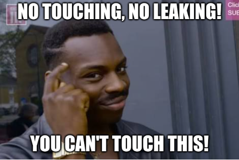

Challenge #484
Midas Touch
La société du challenge Soupe MISO a entendu parler d’une fuite de ses
secrets affichés sur l’écran de contrôle… Qu’à cela ne tienne, ils ont décidé de mettre
en place un contrôle d’accès dans la salle de commandes afin de forcer une
identification via PIN avant l’envoi de commandes.
Pour ce faire, ils ont ajouté un touch screen capacitif de type
FT6206
au
dessus du ILI9341 afin de faire saisir le PIN sur un PINpad virtuel (affiché sur l’écran
TFT avec un layout randomisé pour un maximum de sécurité). Grâce à des fuites de
spécifications, vous apprenez que la bibliothèque
https://github.com/adafruit/Adafruit_FT6206_Library
est utilisée pour gérer le touch screen. Vous savez aussi que la saisie du PIN se finit
par un “OK”.
Comme précédemment, vous avez accès aux fils reliant la board pilotant l’ILI9341 et le
FT6206, avec cette fois-ci une distinction de couleur entre les fils vous permettant
d’avoir deux captures distinctes avec deux analyseurs logiques. Saurez-vous retrouver le
PIN secret permettant de continuer à accéder aux secrets de l’entreprise ?
Note : le format du flag est FCSC{PIN} où PIN
est le
PIN secret.

Fichier à étudier
- midas-touch.tar.gz